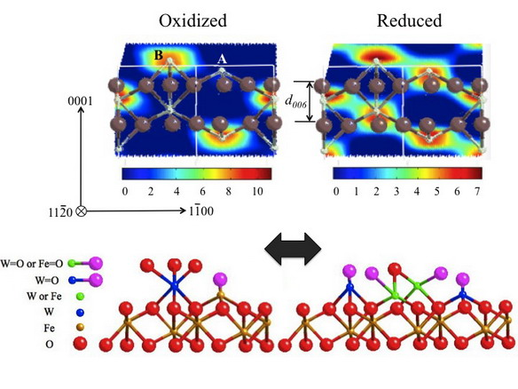

|
|
|
|
|
|
|
Atomic-scale X-ray studies of redox-induced cation dynamics for
oxide supported monolayer catalysts
|
M.J. Bedzyk1,2, Z. Feng1, C.Y. Kim5,
J.W. Elam6, Q. Ma3,
Z. Zhang7, M.E. McBriarty1, D.E. Ellis2,4,
P.C. Stair4,8
|
1Department
of Materials Science and Engineering, 2Department
of Physics and Astronomy, 3DND-CAT,
Synchrotron
Research
Center,
4Department
of Chemistry, Northwestern University, Evanston, IL 60208
5Canadian Light Source Inc.,
Saskatoon, SK, S7N 0X4, Canada
6Energy
Systems Division, 7X-ray Science Division, 8Chemical
Sciences and Engineering Division, Argonne National Laboratory,
Argonne,
Illinois, 60439
|
Metal oxides anchored to oxide supports often exhibit greater
catalytic activity as monolayers than as thicker films.
Understanding this phenomenon requires a chemically sensitive,
atomic-scale view of the interfacial processes. Our strategy is to
use in situ X-ray standing wave (XSW) 3D atomic imaging
combined with ex situ X-ray photoelectron spectroscopy (XPS)
and X-ray absorption fine structure measurements to follow the
redox-induced surface site exchange of cations on an oxide support
as well as the concurrent changes in the oxidation states of the
supported cations. We then compare these atomic-scale findings to
density functional theory predictions for the interface in
question. This work is described in references 1-4.
As a recent example, we followed the changes during the redox
cycle of a 1/3 ML WOX / a-Fe2O3
(0001) interface grown by atomic layer deposition (ALD).4
The XSW measured W atomic maps and XP spectra showed dramatic
changes for the as-deposited (AD), oxidized (Ox) and reduced (Re)
interfaces, which are explained by models that account for W
incorporation at Fe sites with various coordination schemes as
shown below. Reversibility was observed in this redox process,
which demonstrates its relevance for catalytic applications.
|
|
Top:
(1120) 2D cuts through the XSW measured 3D tungsten atomic
density maps for the 1/3 ML WOX /
a -Fe2O3
(0001) interface after oxidation and after reduction. These two W
maps are referenced to the projection of the hematite substrate
crystal structure, which shows Fe surface cations occupying
A-sites and B-sites. The in situ XSW observation shows that
Wcations occupy both sites in the reduced phase, but move out of
the A-site and into the B-site when oxidized.
Bottom:
Proposed models for the fully oxidized and reduced interfaces that
are consistent with the XSW measured W atomic maps and the 6+ and
5+ oxidation states found by ex situ XPS.

|
|
|
|
| |
1
J. Jin, X. Ma, C.-Y. Kim,
D.E. Ellis, M.J. Bedzyk, Surf. Sci. 601, 4571 (2007).
Link
2
C.-Y. Kim, A. A. Escuadro
and M.J. Bedzyk, Surf. Sci.
601, 4966 (2007).
Link
3
C.-Y. Kim, J. A. Klug, P.
C. Stair, and M. J. Bedzyk, J. Phys. Chem. C 113, 1406
(2009).
Link
4
Z. Feng, C.-Y. Kim, J.W. Elam, Q. Ma, Z. Zhang, M.J. Bedzyk, JACS
Communications 131, 18200 (2009).
Link
«Back
|